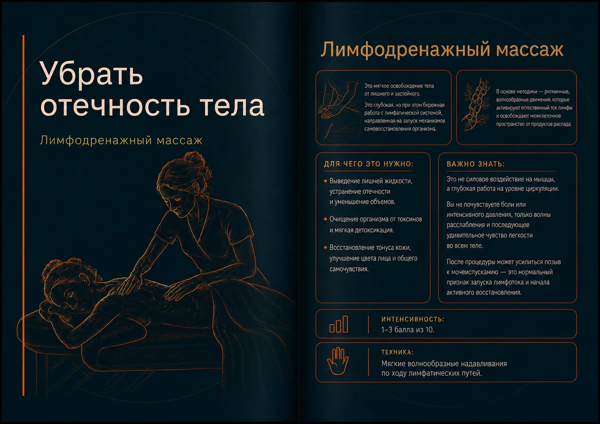

Лимфодренажный массаж во Владивостоке
Убрать отёчность тела
Бережная ритмичная работа с ощущением тяжести и отёчности.

О процедуре
Лимфодренажный массаж
Бережная ритмичная работа, направленная на поддержку естественного оттока жидкости и уменьшение ощущения тяжести.
В основе — мягкие волнообразные движения без силового давления на мышцы.
Как проходит
Специалист работает в спокойном ритме по направлению естественного оттока жидкости. Давление мягкое и не должно вызывать боли.
Для чего выбирают
- Уменьшение ощущения отёчности и тяжести
- Поддержка естественной циркуляции жидкости
- Ощущение лёгкости и мягкого восстановления
Важно знать
Это не силовая проработка мышц. После процедуры может чаще возникать позыв к мочеиспусканию; ориентируйтесь на самочувствие и обычный питьевой режим.
Когда процедуру лучше перенести или согласовать с врачом
- Острая инфекция или температура
- Отёк неизвестного происхождения
- Тромбозы и выраженные сосудистые нарушения
- Сердечные и почечные заболевания — только после разрешения врача
Визуальная памятка
Памятка о процедуре

Сравнить
Возможно, вам подойдёт другой формат


{kind=link}
Записаться или задать вопрос
Выберите удобный способ записи и связи.